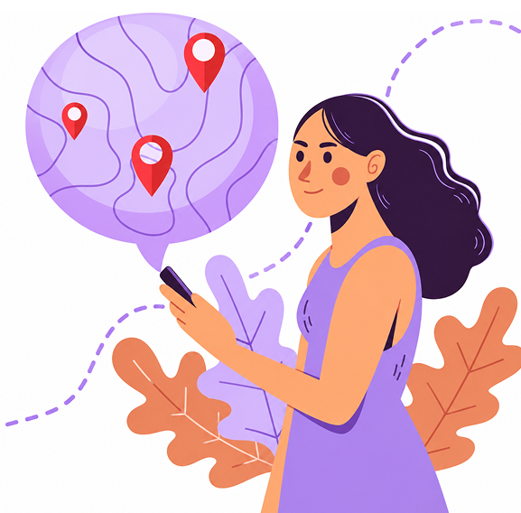
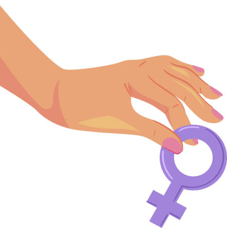

Quero buscar ajuda
Sua vida sem violência começa aqui. Receba atendimento de psicólogas e advogadas voluntárias ou saiba como acessar os serviços públicos especializados.
Você não precisa saber por onde começar. Escolha sua cidade e veja os serviços de apoio mais perto de você.
Saiba Mais
Sua vida sem violência começa aqui. Receba atendimento de psicólogas e advogadas voluntárias ou saiba como acessar os serviços públicos especializados.
Sua atuação como profissional da saúde, psicóloga, advogada, etc. pode transformar a vida de muitas mulheres. Junte-se à nossa rede voluntária! Clique no botão abaixo para entender como participar.
O Elas por Elas é um projeto educativo voltado à prevenção e ao enfrentamento da violência contra a mulher. Por meio da informação e da tecnologia, buscamos ampliar o conhecimento sobre os tipos de violência, os direitos das mulheres e os caminhos para buscar ajuda.
Saiba MaisEncontre endereços e informações sobre delegacias, centros de referência, defensorias, saúde e assistência social.
Acesse o mapa e encontre o serviço mais próximo de você!
Acessar mapa

Não. Clique em “Acessar” e você entra direto, sem cadastro e sem informar nome ou e-mail. A conta existe apenas para as profissionais voluntárias.
Clique em “Sou voluntária” e crie sua conta. Você informa seu registro profissional e a sua área de atuação. Seu perfil aparece na busca depois que suas credenciais forem verificadas.